欢迎来到今天的培训课堂，我们学一个带班的必备技能，异议处理。先跟大家说清楚咱们这节课的场景：我们对接的家长，孩子已经学完半年图形化基础课，马上进入图形化最后一个阶段 —— 算法阶段。在正式学方法之前，我们先来搞懂一个概念：到底什么是异议？咱们先代入一个生活场景想一想：逛街的时候导购给你推荐一件衣服，说特别适合你，但是你心里会不自觉冒出很多想法：会不会显胖？价格值不值？好不好打理、耐不耐穿？大家注意，这不是我们故意找茬、也不是我们一定不想买，只是心里有顾虑、有担心，这些内心的疑问，就是异议。放到我们的工作里也是一模一样的。这批家长已经陪着孩子学了半年图形化，不是零基础小白。哪怕我们跟家长讲算法阶段的价值、分享赛考的成果，家长心里照样会有担心：算法难度上来了，孩子能不能跟得上？平时作业多，时间能不能安排得过来？孩子继续学下去有没有收获？这些顾虑，就是我们要面对的异议。很多新人一听到家长提顾虑、说不想学、要退费，第一反应就是紧张，觉得家长是在拒绝我们。但大家一定要记住：异议不等于拒绝，异议只是家长的担心没有被接住，这也是我们今天专门花时间打磨这项技能的原因。
互动题（调查，无对错）
换位思考一下，如果现在让你去接这批已经学了半年图形化、准备升算法阶段的家长，你心里最害怕家长开口说哪一句话？
- A. 想退费
- B. 学不到东西
- C. 别家更便宜
选错后：直接继续
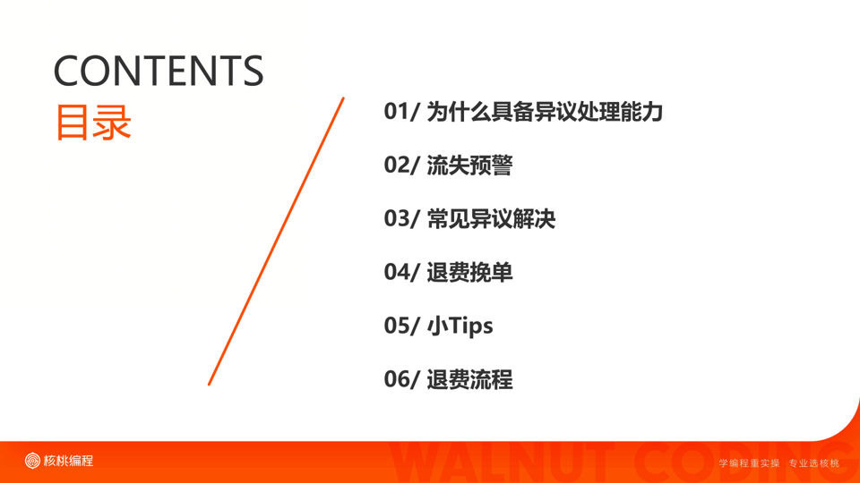
今天这节课，核心就是解决一件事：当家长心里产生顾虑、提出异议的时候，我们怎么从容应对。我们不只是学家长提了退费之后怎么去应对，更要搞懂：异议从哪里来，怎么提前识别、提前规避，最大程度降低流失，同时规范操作、保护好我们自己。今天一共六大模块： 一、 为什么我们一定要练好异议处理这项能力；二、流失预警：学会识别风险信号，提前介入，把风险降到最低；三、常见异议解决：碰到家长高频顾虑，我们对应的沟通思路；四、退费挽单：家长已经明确提出退费，我们怎么沟通挽单；五、小 Tips：结合带班经验，给大家几个上手就能用的挽流失实操办法；六、退费流程：如果最后确实没能留住，我们如何合规走完退费流程。这里给大家划一个最重要的认知重点：异议处理的核心，不是等家长来找我们说退费了才救火。真正厉害的课导，是前置预判、提前沟通、提前规避，从源头减少流失。
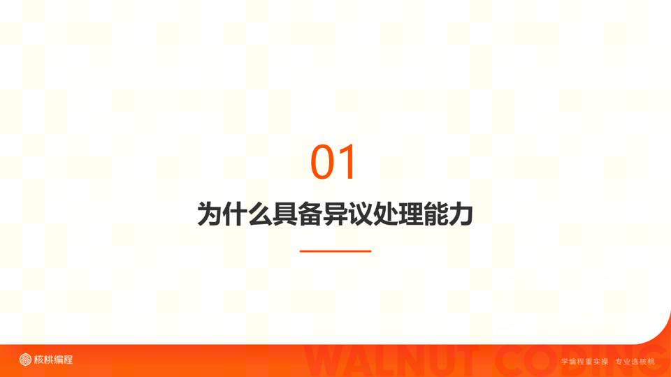
我们进入第一部分：为什么我们必须具备异议处理的能力。很多人会觉得，异议处理就是背话术，家长说一句，我照着模板回一句。但大家一定要清楚：话术只是表层，真正的底气，来自你了解产品和课程逻辑。如果只会死记硬背话术，家长换一种说法、换一个角度提问，你马上就慌了、接不住。只有明白咱们课程为什么这么设计，清楚我们跟家长沟通的底层逻辑，知道我们要传递给家长哪些核心价值，才能灵活应对，稳稳接住家长的异议。大家之前的培训里也了解过，核桃是给家长设置了试学期权益的。来看一道题，以下哪项属于试学期的设计初衷？（本页为章节页，建议挂到P04）？
互动题
以下哪项属于试学期的设计初衷？（本页为章节页，建议挂到P04）
- A. 家长"零成本"全面考察
- B. 理解课程逻辑而非机械执行
- C. 降低决策门槛
- D. 需要逐一关注每个孩子问题
选错后：重讲本页重触发
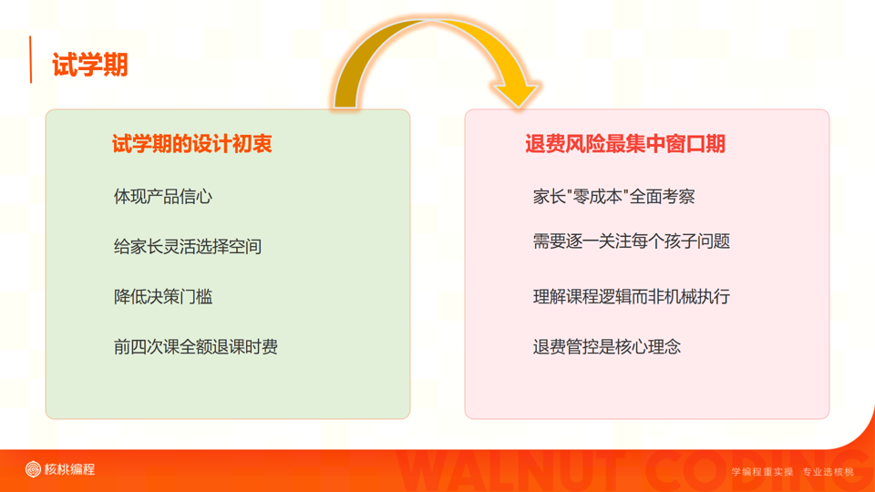
咱们试学期的设计初衷： 第一，体现产品信心。试学期，不是随便给的福利，是我们对自己的课程、师资和教学效果有底气。第二，给家长灵活选择的空间。家长不用一下子敲定长期学习，有一段缓冲时间去感受，试完再决定。第三，降低决策门槛。家长报课的时候多少会犹豫，试学期能打消万一不合适就亏了的顾虑。第四，思维算法课程的权益是前四次课不拆随材、全额退课时费，给家长四次课的试学保障，咱们不做一锤子买卖。但这里有一个两面性：试学期同时也是退费风险最集中的窗口期。第一，家长相当于零成本全面考察我们。前四次课，家长是带着审视的心态在看课、看老师、看孩子的变化，这段时间的感受直接决定后面要不要留下来。二阶段的家长尤其如此，孩子已经学了半年，家长会拿前半年的体验来对比，看算法课值不值、孩子跟不跟得上。第二，需要逐一关注每个孩子的问题，不能批量运营服务，每个孩子的上课状态、吸收情况、家长的顾虑都要盯到。第三，理解课程逻辑，而不是机械执行。不只是每周重复的开课，改作业，做基础的工作。而是要通过日常的上课情况和沟通情况了解家长可能 存在的疑虑。第四，退费管控是核心理念。把退费的风险降低到最小。
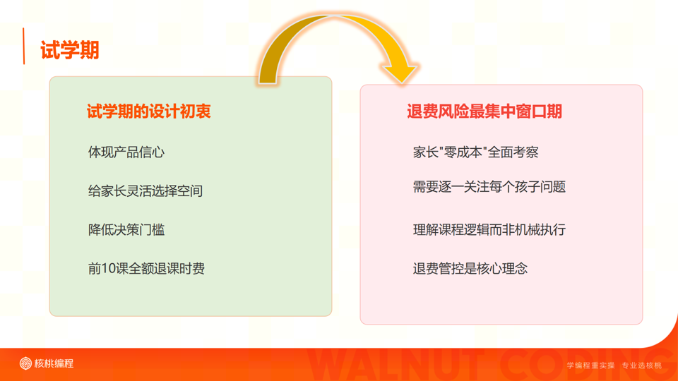
咱们试学期的设计初衷： 第一，体现产品信心。试学期，不是随便给的福利，是我们对自己的课程、师资和教学效果有底气。第二，给家长灵活选择的空间。家长不用一下子敲定长期学习，有一段缓冲时间去感受，试完再决定。第三，降低决策门槛。家长报课的时候多少会犹豫，试学期能打消万一不合适就亏了的顾虑。第四，科特的算法课程的权益是前10个课时不拆随材、全额退课时费，给家长10个课时的试学保障，咱们不做一锤子买卖。但这里有一个两面性：试学期同时也是退费风险最集中的窗口期。第一，家长相当于零成本全面考察我们。前10课时，家长是带着审视的心态在看课、看老师、看孩子的变化，这段时间的感受直接决定后面要不要留下来。二阶段的家长尤其如此，孩子已经学了半年，家长会拿前半年的体验来对比，看算法课值不值、孩子跟不跟得上。第二，需要逐一关注每个孩子的问题，不能批量运营，每个孩子的上课状态、吸收情况、家长的顾虑都要盯到。第三，理解课程逻辑，而不是机械执行。不只是每周重复的开课，改作业，做基础的工作。而是要通过日常的上课情况和沟通情况了解家长可能 存在的疑虑。第四，退费管控是核心理念。把退费的风险降低到最小。
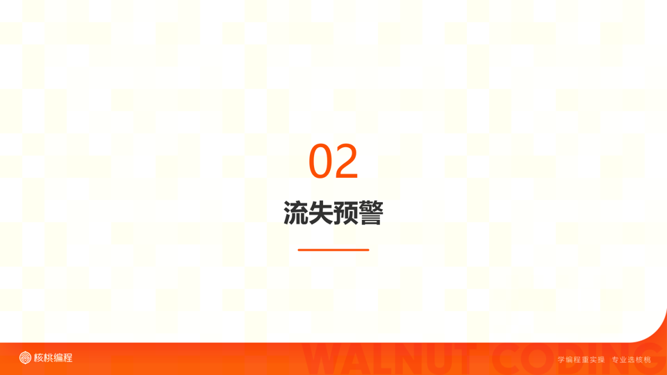
第一部分我们清楚了试学期的双面属性，接下来进入第二块：流失预警。根据往期一线课导沉淀下来的真实数据和经验：如果一个班里有 10 位家长明确提出退费，最后能成功挽留下来 3 个，就已经是非常不错的结果了。这句话其实就在提醒我们一件事：流失管控，核心从来不是等家长开口说退费之后，靠一通挽单电话、靠厉害的话术去救火。真正厉害的管控，是风险前置思维—— 在退费发生之前，就识别风险、提前介入，把隐患化解掉。而且大家要记住，流失预警不是凭我们自己的主观感觉猜出来的，它依托于带班期里一个个实实在在的学员动作、家长反馈。接下来这一部分，我们就一起来梳理：在试学期和开课之后，家长和孩子的哪些行为、哪些话语，属于流失风险信号，我们看到之后就要及时干预，提前规避退费。来看一道题，以下哪项属于列出的“课中异常”风险信号？（本页为章节页，建议挂到P09）？
互动题
以下哪项属于列出的“课中异常”风险信号？（本页为章节页，建议挂到P09）
- A. 完课时长异常
- B. 作业不提交
- C. 随堂测试成绩差
- D. 课后反馈不回复
选错后：重讲本页重触发
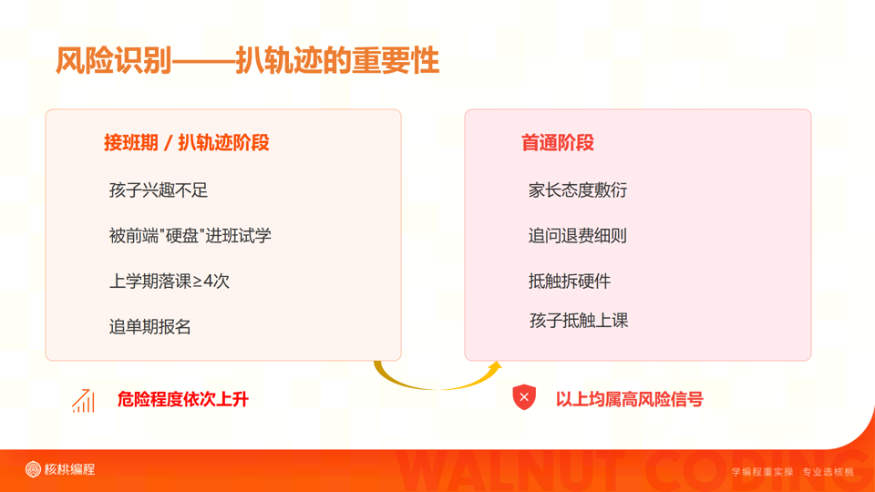
我们接着往下看，这一页重点讲：风险识别 —— 扒轨迹的重要性。先带大家回顾一下咱们接班期标准动作：接班之后第一件事就是扒轨迹，紧接着做首通电话、开见面会家长会，首通还要核对硬件。风险识别，就是从接班扒轨迹这个环节就要开始了。很多新人刚接班级，上来就急着给家长发消息、做服务。但大家要记住：我们刚接手，对这个家长、这个孩子是完全陌生的。扒轨迹，就是去翻看前任老师的沟通记录、孩子过往的学习记录，从历史信息里提前揪出风险学员。先跟大家说清楚一个关键认知：扒出来风险，不等于这个家长一定会退费，只是退费概率更高，需要我们重点盯、重点跟进。我们在扒轨迹的时候，重点标记这四类高风险学员： 第一类，孩子兴趣不足。如果之前的沟通里，家长就反馈过孩子对编程兴趣一般、上课坐不住。等到后面试学阶段，家长很容易拿 “孩子不爱学” 作为理由，提出退费。第二类，前端硬盘进班试学的学员。这类家长本身主动学习意愿不强，是被劝说进来试学的。只要后续遇到一点小问题，比如孩子抵触、或者对课程有一点不满意，退费的概率就会很高。第三类，上学期落课大于等于 4 次的学员。落课本身就是很强的预警信号，说明家庭在时间协调、学习坚持度上本来就有问题。进入试学期之后，很容易继续跟不上、持续缺课，最后选择退费。第四类，追单期报名的学员。追单报名，同样代表家长主动报名的意愿偏弱，稳定性会差一些。不管是扒轨迹阶段，还是首通阶段抓到的这些信号，全部都属于我们的高风险名单，需要我们重点关注、提前干预。再看右边，首通阶段的四个信号。第一，家长态度敷衍。你反馈孩子情况，回复很短、很冷淡，不愿意深聊，说明家长已经在观望，或者对孩子的课程不太关心。第二，追问退费细则。家长主动问怎么退、能退多少，这是非常典型的预警，说明心里已经在考虑退路。第三，抵触拆硬件或拒绝硬件发货。可能家长已经了解拆了硬件要扣费，还是抱着试课的心态。第四，孩子抵触上课，明确说不想上，一上课就哭闹抗拒，这是比较严重的一类。从接班期到首通，危险程度是依次上升的，以上都属于高风险信号。来看一道题，以下哪项是在“首通阶段”识别出的风险信号？
互动题
以下哪项是在“首通阶段”识别出的风险信号？
- A. 上学期落课≥4次
- B. 追问退费细则
- C. 被前端"硬盘"进班试学
- D. 追单期报名
选错后：重讲本页重触发
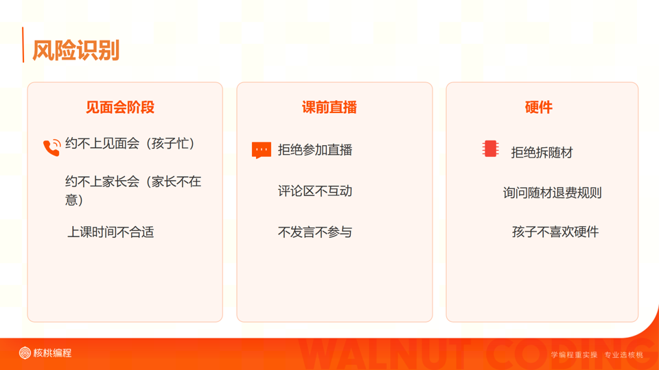
首先是见面会阶段。见面会是我们和孩子第一次深度互动的机会，见面会的时间是可以自主选择的。这里有个重点要大家留意：如果我们约的见面会时间，刚好和后续正式上课的时段一致，但是约好之后孩子依旧不来，这个信号就比较严重了。这说明这个固定时段本身就很难协调，也能反映出家长对课程的重视度不足。其次是家长会。大家可以换位思考，咱们上学的时候，学校开家长会，家长一般都会很上心，尽量准时参加。放到咱们线上编程课也是一样的道理，如果家长多次约不上、不愿意参加家长会，本质就是重视程度不够。后续很容易因为时间冲突、孩子没兴趣，直接选择退课。还有上课时间不合适这个信号，也千万不能忽视。在续报的时候，我们已经和家长核对过上课时间、课程安排了，如果到这个阶段还反复说时间不合适，意味着长期存在时间冲突，坚持下去的难度很大，流失风险很高。接下来是课前直播，这部分主要观察孩子的状态。如果孩子拒绝参加直播、进到直播间之后在评论区完全不互动，全程不发言、不参与，代表孩子本身的主观学习意愿很低。随着试学推进，很容易出现孩子抵触上课，最后家长提出退费的情况。最后是硬件、随材相关的风险信号，这个是非常典型的预警。如果沟通的时候，家长明确拒绝拆开随材，还主动来问随材退费的规则，这就代表家长清楚规则：一旦拆封随材，退费就会产生扣费。他提前打听、不愿意拆，其实已经在给自己留退费的后路了。还有一种情况是孩子不喜欢硬件，硬件本来是课程里帮孩子建立兴趣、制造峰值体验很重要的抓手。如果孩子一开始就对硬件不感兴趣，后面想要带动他喜欢上课程，难度会大很多。以上这些，就是我们在整个试学期里，要重点捕捉的几大类风险信号。来做一道判断题：异议处理最好的方式，就是在每一个节点，及时接住顾虑，而不是等问题攒到一起爆发。
互动题
异议处理最好的方式，就是在每一个节点，及时接住顾虑，而不是等问题攒到一起爆发。
- A. 对
- B. 错
选错后：重讲本页重触发
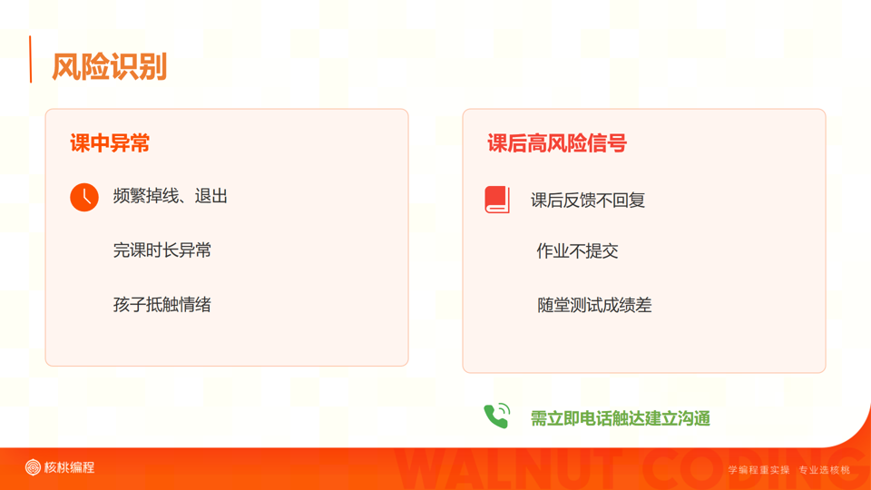
风险识别是贯穿试学期全流程的工作，进入正式开课环节之后，课前、课中、课后同样存在大量需要我们持续盯控的预警信号，我们分为课中异常、课后高风险信号两个模块展开说明。首先是课中异常，我们依托客户端的课堂数据，实时观测学员的课堂状态： 第一，频繁掉线、中途退出或切屏。单次掉线大概率属于网络故障，属于正常情况；但如果后台持续捕捉到学员反复退出课堂、频繁切出课程界面，通常代表孩子课堂专注力不足，对课程内容兴趣偏低，存在坐不住、逃避上课的倾向。发现该信号后，我们可以先和上一任老师了解学员历史带班记录，结合过往的课堂习惯，区分是偶发情况，还是持续性问题。第二，完课时长异常。分为两种典型情况：一种是挂机挂课，学员账号在线，但本人并未参与课堂；另一种是有效听课时长过短、听课断断续续，跟不上课程节奏。长期处于这类状态，知识无法连贯吸收，孩子会逐步丧失学习成就感，学习兴趣持续下滑。第三，学员课堂上表现出明确抵触情绪，例如走神、哭闹、直接表达不想上课。这是最直观、优先级最高的预警信号。这类问题不要等到下课之后再处理，在课堂当中我们就要第一时间做好记录、同步跟进，第一时间先和学员建立沟通，逐步搭建学员对授课老师的信任感。接下来是课后高风险信号。课程刚启动阶段，家长普遍会抱有较高期待，主动关注孩子的学习吸收情况，这个阶段的课后反馈行为具备很强的参考价值： 第一，课后反馈不回复。我们同步孩子课堂表现、作业情况的反馈信息后，家长长期无回应，一方面说明家长对本门课程的关注度不足，对孩子的学习结果缺少重视；另一方面也有可能家长内心已经存在顾虑，但暂时没有主动表达。第二，作业持续不提交。作业是检验课堂吸收效果、巩固学习习惯的核心载体，稳定提交作业代表家庭课后配合度良好。长期不交作业，反映出学员学习主动性弱，家庭端的配合意愿偏低。第三，随堂测试成绩持续不理想。测试结果可以直观反映知识掌握程度，如果连续测试表现较差，代表学员当前节奏下跟不上课程内容，后续很容易因为感知不到学习效果，提出异议。尤其进入算法阶段，课程难度提升，该指标需要我们重点盯防。以上任意一类信号出现，都属于高风险事件，需要立即电话触达家长开展沟通。文字消息容易被忽略，电话沟通能够更高效地探明家长真实想法、同步解决方案，提前干预，规避后续因跟不上、没效果引发的退费诉求。
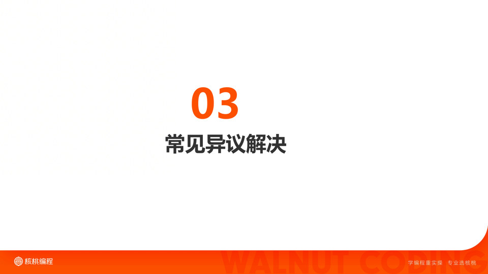
前面我们完整梳理了试学期全流程的流失预警信号，从接班扒轨迹、首通沟通、见面会，家长会、课前直播、再到课中、课后的动态监测，建立起一套完整的风险识别体系。风险识别的核心价值，是提前发现隐患、前置干预；但在实际带班过程中，依然会有家长直接提出异议，告知孩子不想继续学习，或是明确表达退费诉求。本章节，我们就聚焦异议发生后的应对逻辑，梳理带班场景中高频出现的家长异议类型，针对每一类异议，配套标准化、可落地的应对思路与解决策略。通过规范异议处理动作，回应家长顾虑，在异议发生阶段进一步降低学员流失概率。来看一道题，家长跟你说“孩子不想学了”，问题就一定在孩子身上吗？
互动题
家长跟你说“孩子不想学了”，问题就一定在孩子身上吗？
- A. 一定
- B. 不一定
选错后：仅弹正确提示继续
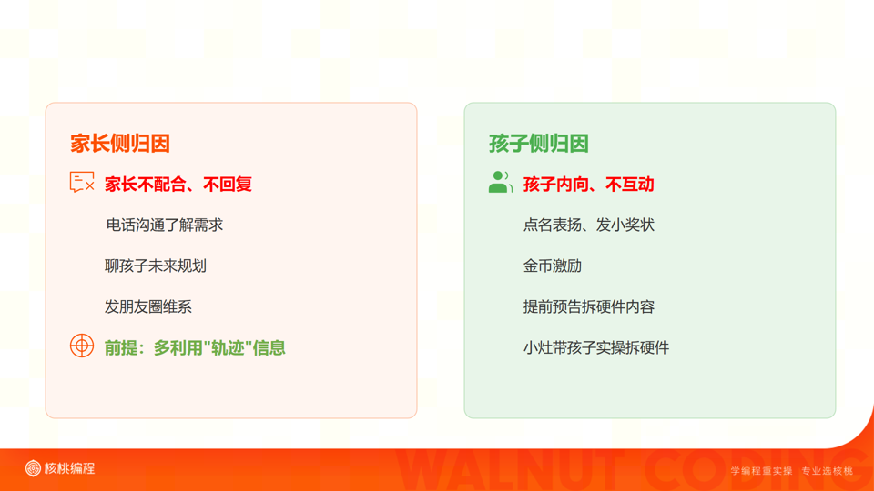
在处理家长异议之前，我们首先要完成异议归因分类。我们将异议划分为两大类型：家长侧归因、孩子侧归因。两类归因对应的底层矛盾不同，因此我们的应对动作也需要遵循差异化的执行顺序与策略。首先来看家长侧归因。典型表现为家长配合度低、消息不回复。尤其进入算法阶段的家长，和零基础入门的家长存在明显区别：这类家长已经陪伴孩子完成半年图形化课程学习，亲眼见证过孩子的作品，对编程课程本身具备基础认知。家长不回复、不配合，并不代表完全否定课程，更多是进入算法阶段之后，顾虑持续增加，对孩子持续学习的信心有所下降。核心担忧集中在课程难度提升、孩子难以跟上节奏，同时无法直观看到进阶学习的长期价值，正在权衡是否继续投入时间与精力。针对这类情况，我们的目标是帮助家长清晰感知：从图形化到算法阶段，课程体系、孩子能力层面的进阶变化与成长价值。配套三个落地动作： 第一，优先采用电话沟通，探明家长真实顾虑。不要单纯依靠文字消息催促上课，沟通时结合孩子在图形化阶段积累的学习基础，针对性挖掘家长内心的担忧点。第二，同步孩子长期学习规划。半年图形化学习已经完成编程思维启蒙，算法阶段是复杂逻辑训练、硬件进阶、考级与赛事衔接的关键过渡期，我们需要向家长讲清楚这个阶段学习的必要性，建立长期学习预期。第三，朋友圈定向维系。如果多次私信沟通没有回应，我们可以设置仅该家长可见，围绕前期捕捉到的顾虑，推送匹配的学习案例、成长素材，持续传递价值。家长侧归因所有动作的核心前提：充分调取、利用学员历史学习轨迹信息，所有沟通都要有数据、学习记录作为支撑。接下来是孩子侧归因，典型表现为孩子性格内向，课堂不愿互动。这类孩子同样拥有半年图形化学习基础，进入第二阶段不愿互动，大多并不是知识掌握不足，而是课程难度上升之后产生畏难心理，害怕出错、担心被评价，不敢主动表达。对于这个阶段的孩子，驱动学习的核心要素是兴趣、成就感，以及师生之间稳定的情感联结。我们围绕这三点设计激励动作： 第一，课堂正向激励。在课前直播、正式课堂中主动点名表扬内向、较少发言的孩子，搭配金币、电子奖状等奖励。这个激励动作包含两层核心逻辑：第一层是帮助孩子获得学习成就感，肯定他的学习输出；第二层是建立情感连接，让孩子感受到老师看见他、持续关注他，慢慢对老师产生依赖感，放下心理负担，逐步建立编程学习信心，愿意主动参与课堂表达。第二，提前预告硬件升级内容。借助课前直播、IM 消息、语音或视频通话，提前向孩子介绍全新硬件套件内容，制造新鲜感与期待感。第三，开设专项小灶辅导。单独带孩子实操体验升级后的硬件，在一对一的轻松场景里进一步巩固孩子对老师的信任感，依托情感连接降低畏难情绪，带动孩子主动参与课堂。所以归因时一定要分清，是家长看不到进阶价值，还是孩子面对新难度产生了畏难，再对应用上面的方法。来看一道题，处理“家长不配合、不回复”时，我们的前提是？
互动题
处理“家长不配合、不回复”时，我们的前提是？
- A. 提前预告拆硬件内容
- B. 小灶带孩子实操拆硬件
- C. 多利用"轨迹"信息
- D. 点名表扬、发小奖状
选错后：重讲本页重触发
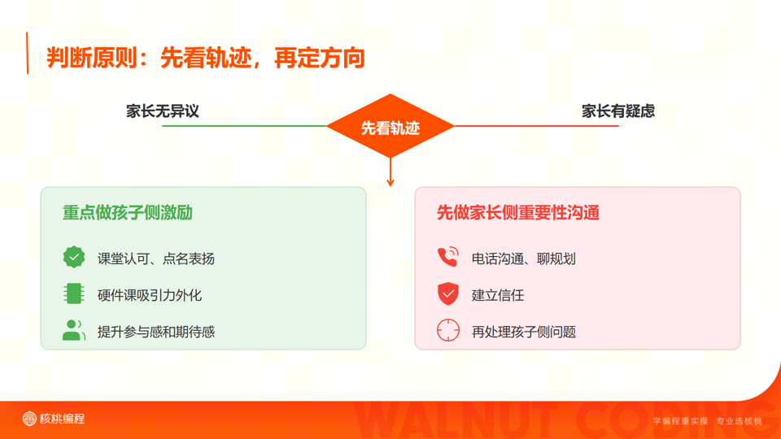
明确了异议分为家长侧、孩子侧两类归因之后，我们需要掌握优先级判断逻辑，核心原则就是：先看轨迹，再定方向。我们依托学员历史学习轨迹，和家长的沟通记录区分两种场景，匹配对应的处理顺序和工作重心。第一种场景：家长无异议。家长没有顾虑、对课程保持认可，并且愿意配合我们的教学跟进，说明卡点不在家长端，核心矛盾集中在孩子身上，我们的工作重心就要放在孩子侧激励。这里要注意：重心虽然在孩子，但我们也要同步和家长达成共识，跟家长说明我们会重点帮助孩子提升学习兴趣，这个过程需要家校一起配合、共同跟进。提前同步这件事，后续我们再和家长同步孩子情况时，家长能清晰看到老师的付出和动作，认可孩子愿意学习的真实性。具体落地动作： 第一，做好课堂认可、点名表扬。主动邀请孩子连麦上台回答问题，只要孩子愿意开口尝试，就给他发放额外金币、单独定制电子奖状，通过这种正向反馈帮孩子积累成就感，慢慢建立对老师的信赖感；第二，把硬件课程的吸引力外化，提前跟孩子介绍算法阶段硬件的升级亮点，告诉孩子咱们可以用更进阶的代码，实现更酷的效果；第三，多给孩子创造课堂展示机会，提升他的参与感，勾起他对后续硬件实操课的期待，激发学习内驱力。第二种场景：家长有疑虑。当家长存在顾虑时，我们要优先开展家长侧的价值沟通，务必电话触达、和家长同步长期学习规划。在沟通前，我们先从课堂数据、和孩子的互动中收集孩子的学习意愿：如果孩子本身愿意继续学习，我们就把这个信息同步给家长，以此建立信任，向家长说明，当前已经进入图形化后期的算法阶段，图形化基础内容即将收尾，这是衔接后续考级、赛事进阶学习的关键节点，帮家长建立长期学习预期。如果我们暂未获取到正向的孩子意愿，在和家长沟通完成、打消家长部分顾虑之后，再回头处理孩子侧的问题，同样用邀请上台答题、单独发奖状、金币奖励、提前了解硬件这些方式，培养孩子的学习兴趣，帮孩子建立学习成就感。我们简单总结这条判断逻辑：家长认可、无异议，重心放在孩子激励，同时和家长同步家校配合的共识；家长存在顾虑，优先电话沟通家长、对齐长期规划、建立信任，再根据孩子的意愿情况，跟进孩子侧的引导工作。轨迹信息是我们所有动作选择的判断基础。来做一道判断题：按判断原则，确定处理方向之前要先做什么？
互动题
按判断原则，确定处理方向之前要先做什么？
- A. 先看轨迹
- B. 先点名表扬孩子
- C. 先打电话聊规划
- D. 先建立信任
选错后：重讲本页重触发
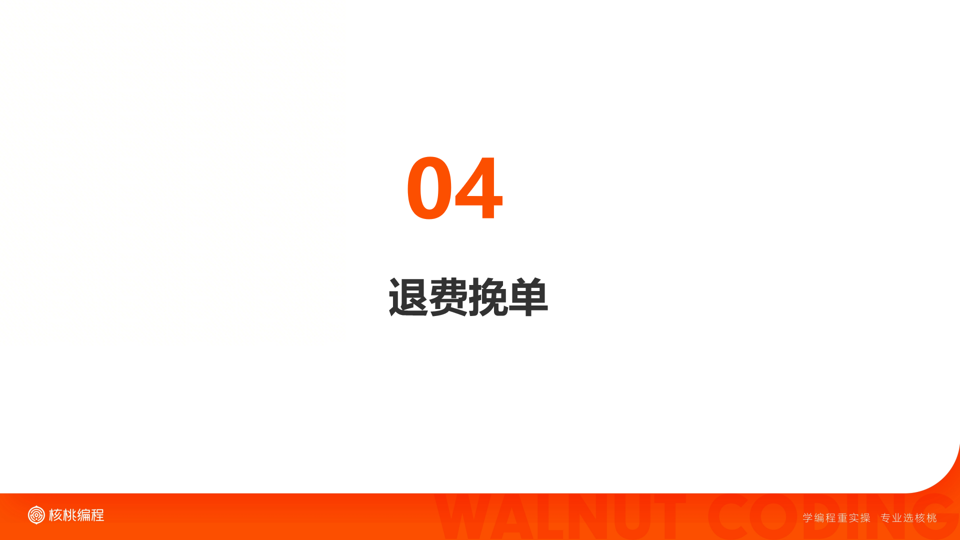
前面我们从风险识别、异议归因、优先级判断，全部都是前置预防动作，目的是提前发现隐患、尽量把流失拦截在萌芽阶段。但大家也要清楚，哪怕我们前期预警做得再到位，依然会遇到家长明确提出退费的情况，这是我们带班过程中一定会碰到的场景，不用紧张、不要慌乱。进入本章节，我们就聚焦已经明确提出退费诉求的场景，给大家梳理标准化的退费挽单流程、可直接落地的沟通方法，告诉大家家长正式提退费之后，我们第一步做什么、每一步怎么沟通、怎么争取挽单机会。
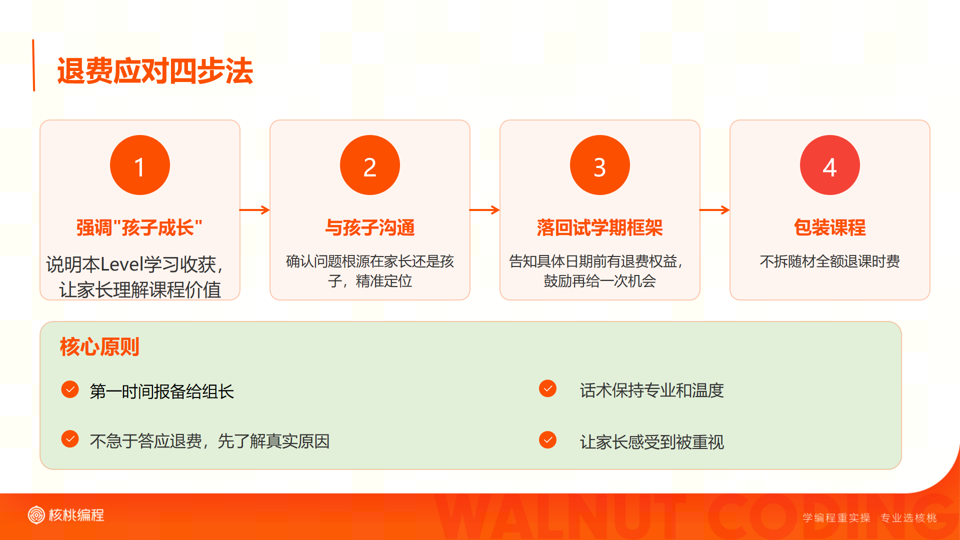
如果家长已经明确提出退费，咱们怎么应对？先看上面的退费应对四步法，有先后顺序，不能打乱。第一步，强调孩子成长，说明本Level的学习收获，让家长理解课程价值。咱们的学生大多已有半年图形化积累，不要空泛讲好处，要拿着孩子的学习轨迹，把半年图形化和现在算法阶段的收获串起来：先回顾孩子图形化阶段的进步，再讲现在的算法课是逻辑能力的延伸，让家长看到这半年打下的基础正在这个阶段落地，不是白学。先稳住家长对课程价值的认知，不要顺着不想学了直接聊退费。第二步，与孩子沟通，确认问题根源在家长还是孩子，精准定位。是孩子这边进阶后难度上来，畏难抵触、上课不互动？还是家长这边觉得没时间、价值不够、规划有变，其实孩子并没有不喜欢？算法阶段很容易出现一种情况，孩子自己愿意学，是家长单方面想停。单独和孩子聊过，拿到真实反馈，后面的挽留方向才不会错。第三步，落回试学期框架，告知家长具体日期前有退费权益，鼓励再给孩子一次机会。客观平稳地讲清规则，不施压、不隐瞒。可以这样说：咱们现在还在试学期内，截止日期之前，退费权益都给您保留着；我不是要强留，只是孩子有半年的基础，在这个阶段停下来挺可惜的，希望您再给课程、也给孩子一次机会。规则讲透明，姿态放温和，不制造对立。第四步，包装课程，把退费方案提前讲清楚：如果最后确实选择退费，随材不拆，试学期可以全额退课时费。把这个政策给到家长，降低顾虑，让家长感受到咱们灵活、有诚意，不是卡着不让退。下面四条核心原则必须守住。第一，第一时间报备给组长，家长一提退费，别自己单独扛，及时同步组长拿支持。第二，不急于答应退费，先了解真实原因，不要家长一说退就马上走流程。第三，话术保持专业和温度，孩子已经跟着核桃学了半年，有感情基础，不要生硬推销，共情优先。第四，让家长感受到被重视，认真听家长的难处，认可家长的想法，而不是一上来就反驳。还要提醒一句，图形化思维的老生退费，最大的风险是学到一半中断，前面半年的积累断层。这一点可以讲，但切记不要道德绑架，客观讲清利弊。来看一道题，退费应对四步法中，第3步“落回试学期框架”要做的是？
互动题
退费应对四步法中，第3步“落回试学期框架”要做的是？
- A. 说明本Level学习收获，让家长理解课程价值
- B. 确认问题根源在家长还是孩子，精准定位
- C. 不拆随材全额退课时费
- D. 告知具体日期前有退费权益，鼓励再给一次机会
选错后：重讲本页重触发
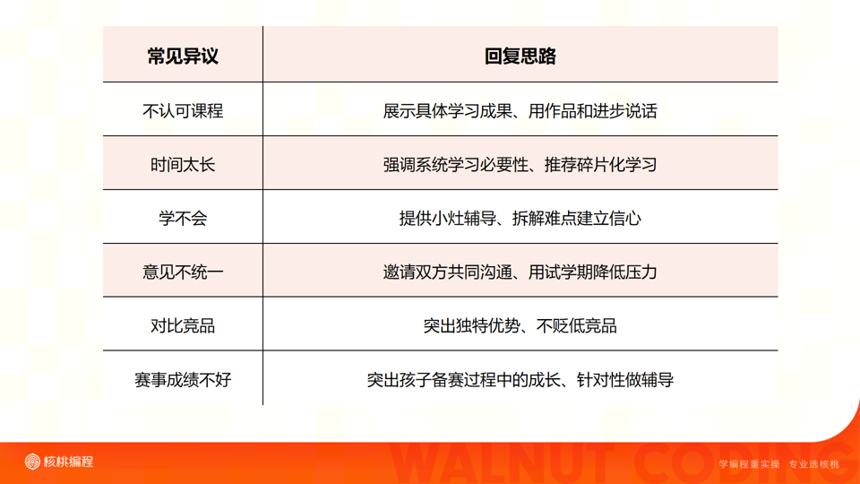
接下来我们来看家长提出退费的时候，最常遇到的 6 类异议，以及每一类对应的沟通思路。这 6 类也是我们算法阶段挽单里碰到最多的情况，我们逐个拆解。第一类：不认可课程。应对思路：展示具体学习成果，拿作品和进步说话。这类家长，孩子已经有半年图形化思维课的基础。我们沟通前一定要提前做好准备，把孩子图形化思维阶段的作品、课堂记录全部整理出来，对比思维阶段和现在算法阶段的变化，跟家长讲实实在在的进步，不要空泛地讲编程有什么价值。我们可以拿课堂完成情况、随堂测的变化、赛考的数据来佐证。同时跟家长点明，孩子已经投入了半年的时间，现在算法阶段是图形化的收尾阶段，坚持走完这一段，前面半年的积累才能落地，引导家长考虑继续学下去。第二类：时间太长。应对思路：强调系统学习必要性，推荐碎片化学习方案。同样，孩子已经完成半年图形化学习，不管是时间还是金钱成本都已经投入进去，走完当前算法阶段，整套图形化体系才算闭环，中途停下前面的积累会大打折扣。如果家长纠结单次课时久，我们可以给到碎片化学习方案：咱们一次课是两个课时，如果孩子当天时间紧张，可以先完成第一课时，后面再和家长约孩子空闲时间，单独带孩子补第二课时，补课时的时候老师一对一跟进辅导，既能减轻当下的负担，也能保障学习效果，让家长感受到我们灵活调整、愿意配合的温度，配套轻量化练习，不让孩子压力太大。第三类：学不会。应对思路：提供小灶辅导、拆解难点，帮孩子重建信心。先跟家长共情：进入算法阶段难度提升，觉得吃力是非常正常的。跟家长说明，90% 的孩子刚开始都会觉得跟不上，这不是孩子智力问题，是学习思维方式问题。而编程本身，就是训练孩子拆解复杂问题的思维方式。同时给到明确方案：我们有专属小灶辅导，会把算法里的难点拆碎、分步练习。并且结合孩子之前在图形化阶段学得不错的过往记录，告诉家长孩子本身是有基础、有能力学好的，只是现阶段需要多一点分层引导，帮孩子重新建立信心。第四类：家里意见不统一。应对思路：邀请双方一起沟通，借助试学期降低决策压力。很多时候是爸爸妈妈想法不一致，一个想继续、一个想停。我们可以邀请两位家长一起参与沟通，把试学期的规则清晰讲明白，先试、再最终决定，降低全家人的决策压力，给孩子一个继续尝试的机会。沟通前先摸清孩子本人的意愿，如果孩子愿意接着学，也可以引导孩子自己跟爸爸妈妈表达想法。第五类：拿其他机构竞品对比。应对思路：突出我们独有的课程优势，坚决不贬低竞品。我们核心亮点是：模顿实操搭配直播授课，这套模式在市面上是很有特色的。客观对比，不踩其他机构。同时再次点明，咱们图形化分为思维、算法两个阶段，现在刚好走到后半段，是整套体系的收尾环节，体系连贯是很大的优势，中途放弃，整套体系就学不完整，非常可惜。第六类：赛事成绩不理想。应对思路：重点讲备赛过程里的成长，同步针对性辅导方案。我们要帮家长转换认知：一次比赛的结果，不能直接判定孩子学得好不好。比起最终名次，孩子备赛时练题、调试程序，才是更大的收获。可以引导孩子自己和家长分享备赛的感受，同时给到后续的针对性辅导计划，帮孩子补齐薄弱点，为下一次赛事做好准备。
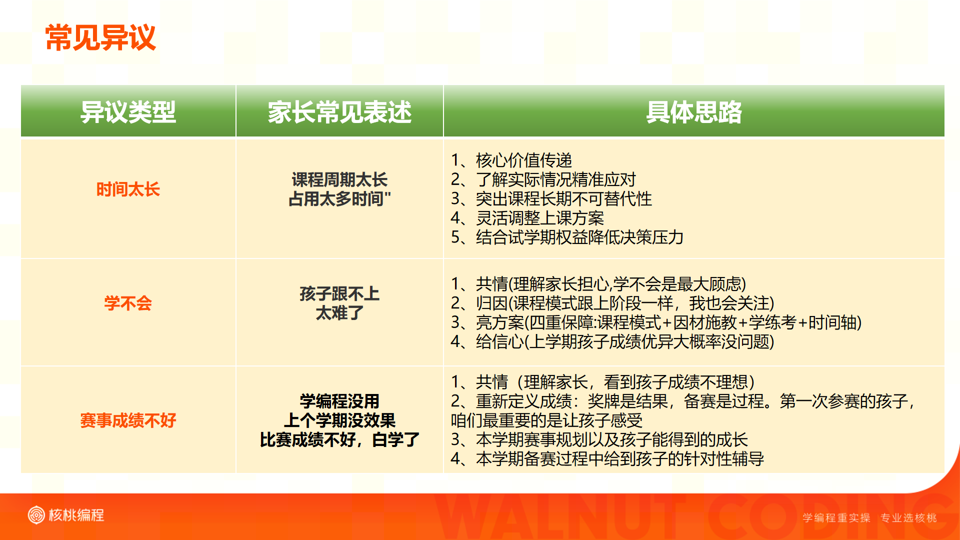
刚刚我们把退费里 6 大类异议做了整体梳理，接下来我们挑出最高频的 3 种异议，给大家拆到沟通步骤，方便大家直接拿去用。第一个：异议类型 —— 时间太长 家长经常会说：课程周期太长，占用太多时间。我们一共 5 步走： 第一步，先传递课程核心价值。第二步，摸清真实情况，区分家长是真的时间冲突，还是拿 “时间长” 当借口。主动去问清楚孩子每周的作息安排、各科的学习节奏，判断背后真正的顾虑；第三步，突出编程长期学习的不可替代性。编程训练的就是拆解问题的思维，帮孩子学会把复杂大任务拆成一个个小目标逐个攻克，这套思维能力可以迁移到数学、理科学习里，是能做到事半功倍的；第四步，给到灵活上课方案。如果确实是日程排不开，咱们一节课两个课时可以拆分上，先上完第一课时，后面约孩子空闲时间单独补第二课时，补课时老师一对一跟进辅导，减轻一次性上课压力；第五步，搭配试学期权益，降低家长的决策压力。邀请家长先利用试学期试一试，观察这段时间孩子的适应情况、学习效率变化，再做最终决定。我们接着讲第二个高频异议：学不会。家长一般会这样说：孩子跟不上，内容太难了。第一步，先共情。我们一定不要一上来就反驳家长，先接住他的顾虑。可以跟家长说：我特别理解您的担心，怕孩子跟不上、学不会，这也是很多家长最在意、最担心的点。第二步，做好归因。跟家长讲清楚：咱们整体的课程模式，和上一个图形化阶段是保持一致的。只是现在进入算法阶段，难度本身就会往上抬，遇到吃力是很正常的过渡期现象，不只是咱们家孩子，班里其他很多孩子刚到这个阶段，也都会碰到一样的卡点。您放心，我这边会重点多关注孩子的状态。第三步，亮出我们的四重保障方案。我们有成熟的课程模式、因材施教的针对性引导、学练考一体的闭环安排，还有科学规划的学习时间轴。整套课程体系加上老师配套的服务，就是用来帮孩子拆解难点、慢慢消化内容的，咱们要给孩子一点适应的时间，不要因为暂时跟不上，就直接否定孩子现在的努力，还有后续成长的可能性。第四步，给到信心。我们拿出孩子之前的学习记录，如果上学期成绩不错，就重点提；就算现阶段只有一点点小进步，也把这个进步讲出来。跟家长说明：有体系课程做支撑、有老师持续跟进辅导，加上孩子自己愿意尝试，再配合家里的鼓励，咱们家校一起配合，孩子平稳度过这个适应期，大概率是可以跟上的。接下来我们讲第三个高频异议：赛事成绩不好。家长常说的原话是：学编程没用，上个学期没效果，比赛成绩不好，感觉白学了。第一步，先共情。我们先接住家长的情绪：我特别理解您，看到孩子比赛成绩不理想，心里会觉得没看到回报，有这样的想法很正常。第二步，帮家长重新定义成绩，传递正确的学习理念。奖牌、证书只是最终的结果，备赛的整个过程才是孩子真正收获成长的地方。尤其是孩子第一次参赛，我们首要目标不是冲高分、拿奖项，而是让孩子在刷题、调试代码、排查 bug 的过程里得到锻炼。我们可以带着家长一起回顾，孩子备赛期间付出的努力，把之前课上跟家长同步过的小进步、作品亮点拿出来一起复盘，让家长看见过程里的收获。沟通时可以邀请孩子自己说说备赛时的感受，孩子亲口讲出来的收获，更容易打动家长。第三步，同步本学期的赛事规划和成长预期。虽然上次比赛结果不尽人意，但孩子已经攒下了宝贵的赛场经验，知道比赛是什么节奏、考题是什么形式。结合咱们这学期的课程安排和老师配套服务，跟家长讲清楚接下来的成长路径，给家长正向的展望。第四步，给到明确的辅导承诺。跟家长说，这学期我会重点盯着孩子，持续跟进他的学习状态，针对他薄弱的地方做定向辅导，陪着孩子一点点补齐短板，稳步提升。以上内容都是针对三大高频异议的解决思路。来看一道题，家长说“课程周期太长、占用太多时间”，以下哪项是给出的具体思路？
互动题
家长说“课程周期太长、占用太多时间”，以下哪项是给出的具体思路？
- A. 重新定义成绩：奖牌是结果，备赛是过程
- B. 结合试学期权益降低决策压力
- C. 亮方案（四重保障）
- D. 共情：学不会是最大顾虑
选错后：重讲本页重触发
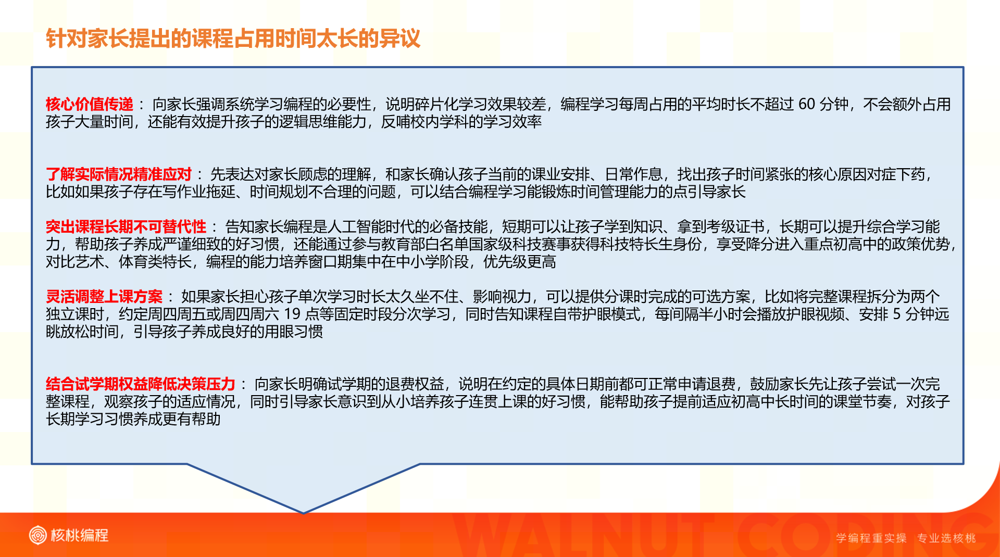
接下来我们单独把 “时间太长” 这个异议拆细来讲，一共五步，每一步都有沟通抓手。第一步，核心价值传递。我们先要跟家长讲清楚系统学习的必要性，咱们现在已经走到图形化的算法阶段，图形化整套知识点马上就学完了。如果现在中断、断断续续碎片化学，效果会大打折扣，前面半年投入的时间和积累就浪费了。同时跟家长说明，咱们编程每周平均时长不超过 60 分钟，并不会挤占孩子大量课余时间；而且编程训练的逻辑思维，还能反哺校内学习。举个很直观的例子：编程里学到的坐标，本身就是小学数学的难点，孩子提前在这里练熟，之后校内上课接受速度会比别的孩子更快。第二步，了解实际情况，精准应对。先共情，让家长感受到我们和他是一边的，理解他担心孩子时间不够用的难处。接着主动问清楚孩子每天的作业量、作息安排，找到真正时间紧张的根源，再对症下药。如果发现是孩子写作业拖拉、不会规划时间，我们就顺势引导：编程本身就是教孩子把大问题拆成一个个小任务，这套拆解思路，刚好也能帮孩子练习时间管理，改善磨蹭的习惯。第三步，突出课程长期的不可替代性。跟家长讲，编程是人工智能时代的必备能力。短期来看，孩子可以掌握知识、参加考级拿证书；长期来看，能锻炼综合学习能力、养成严谨细致的习惯。后续还有机会参加教育部白名单国家级赛事，争取科技特长相关的机会。而且编程适合中小学集中培养，窗口期很宝贵。第四步，灵活调整上课方案。如果家长还是顾虑单次上课时间久、孩子坐不住、担心用眼问题，我们给到拆分方案：一次课拆成两个独立课时分次上，约定好固定时间段，拆分之后老师一对一跟进辅导。同时跟家长说明课程自带护眼模式，每半小时会弹出护眼视频、安排 5 分钟远眺放松，帮孩子养成好的用眼习惯。第五步，结合试学期权益，降低决策压力。跟家长明确试学期退费规则：在约定日期之前，不拆随材，是可以正常申请全额退课时费的，没有风险。鼓励家长再给孩子一次尝试的机会。这个时候也可以把孩子叫到电话旁边，听听孩子自己真实的想法，引导孩子说出愿意。咱们老师、家长、孩子三方一起沟通，共同决定要不要接着试一段时间。
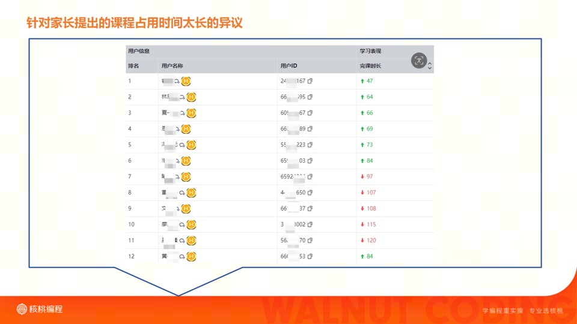
和家长沟通，最好配上图片，有图有真相，家长的信服度更高。比如这张截图，能清楚展示孩子的学习表现和完课时长。回应时间太长这类异议时，把孩子实际的完课时长摆出来，比空口说更有说服力。
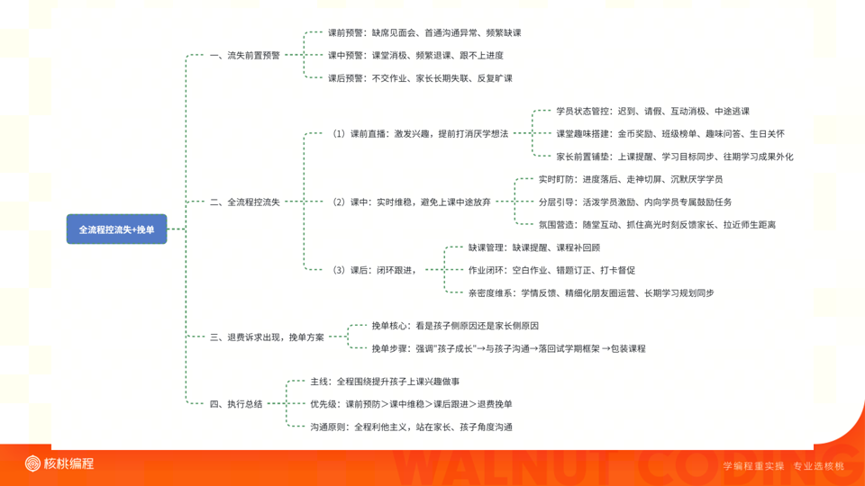
这一页是全流程控流失加挽单的完整框架，分四大块，帮大家把前面的内容串起来。第一块，流失前置预警，分课前、课中、课后三类信号。课前看缺席见面会、首通沟通异常、频繁缺课；课中看课堂消极、频繁退课、跟不上进度；课后看不交作业、家长长期失联、反复旷课。提前把风险学员识别出来。第二块，全流程控流失，从三个环节做日常留存。课前直播预热，激发兴趣，提前打消厌学想法；课中实时维稳，避免孩子上课中途放弃；课后闭环跟进，做好缺课管理、作业督促和亲密度维系，比如学情反馈、朋友圈运营、长期学习规划同步。第三块，退费诉求出现后的挽单方案。挽单核心是先分清是孩子侧原因还是家长侧原因，再用退费四步法执行挽留。记住一句话：家长有顾虑，先打通家长认知；如果根源在孩子，那孩子的学习意愿，就是说服家长的关键。针对孩子厌学的情况，挽单可以按这个顺序推进：先共情安抚，再深挖厌学根源，然后定制专属上课模式，最后制定短期成长目标。第四块，执行总结。主线是全程围绕保护孩子的学习兴趣做事；优先级是课前预防大于课中维稳，大于课后跟进，大于退费挽单；沟通原则是全程利他，站在家长和孩子的角度沟通。来看一道题，控流失的优先级排序是？
互动题
控流失的优先级排序是？
- A. 退费挽单 > 课后跟进 > 课中维稳 > 课前预防
- B. 课前预防 > 课中维稳 > 课后跟进 > 退费挽单
选错后：重讲本页重触发
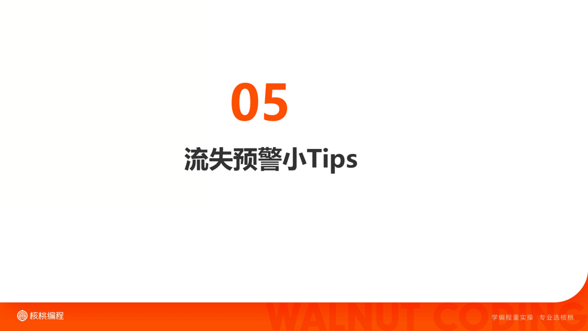
刚刚我们完整把退费挽单、异议应对的方法全部梳理完了。那大家想一想，最好的挽单，其实不是等家长已经提退费了我们再去挽留，而是在日常带班的时候，提前识别风险、做好维护，从源头降低流失。那接下来这一章节，就是给大家分享我们日常带班可以落地的流失预警小技巧 ，都是课导实操沉淀下来的小习惯、小动作，帮我们提前捕捉风险信号，减少后面退费的情况。我们等下会讲到：平时哪些信号代表孩子和家长已经有流失隐患、日常怎么做好常态化反馈、怎么主动跟进、怎么把服务做在前面，把风险提前拦截住。
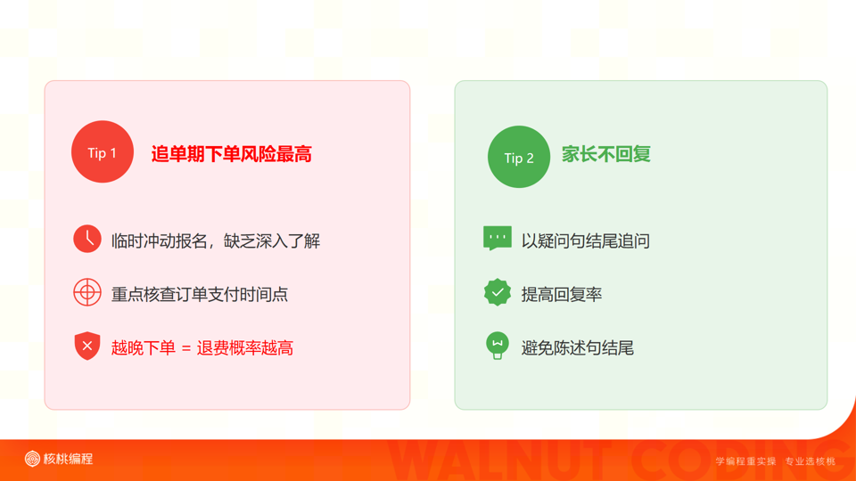
一、追单期下单风险最高。咱们这批是图形化升算法的老生家长，对咱们的课程规则、退费政策、上课安排其实都已经很熟悉了。很多家长前期一直观望，等到追单收尾的最后时刻才临时下单。这类家长往往还没有充分理清，算法阶段和之前图形化思维阶段的区别：算法阶段不再只是认识积木、拼接完成作品，对孩子的思维深度要求会明显提升，更考验逻辑拆解、问题调试、举一反三的能力，学习目标、课堂节奏、练习侧重都会不一样。很多家长是先看好优惠和试学期保障，先把名额保留下来，但还没有建立起对新阶段学习难度、思维培养方向的合理预期。等到正式开课之后，一旦发现学习要求和自己预想不一样，很容易产生落差，后续就容易提出退费。所以我们要重点盯紧订单支付时间，越晚在追单末尾下单的学员，流失风险越高。针对这部分家长，一定要主动补一轮沟通，提前对齐预期：跟家长讲清楚，思维阶段重在把基础知识点学懂、会用；而算法阶段，核心是拔高思维能力，训练孩子复杂问题拆解、逻辑推导的能力，这套能力不管是对理科思维塑造，还是校内数学的学习助力，价值是不一样的，提前把阶段差异讲透，从源头降低流失风险。二、家长不回复。到了算法阶段，这个情况特别常见。很多老师习惯发一大段学情、课程介绍，最后用陈述句收尾。家长已经看了半年类似的消息，早就没有回复的意愿了，消息发出去就石沉大海。想要提高回复率，核心技巧就是：避免陈述句结尾，改用疑问句收尾，主动抛出问题引导家长开口。举个实操方式，除了文字消息，我们也可以给孩子录制简短的学情问答小视频，视频最后抛出一个小问题，邀请家长或者孩子来回复。只要家长愿意回复，我们就多了沟通窗口，藏在心里的顾虑、异议才有机会提前暴露出来，我们才能尽早疏导，而不是等到后期直接提退费。
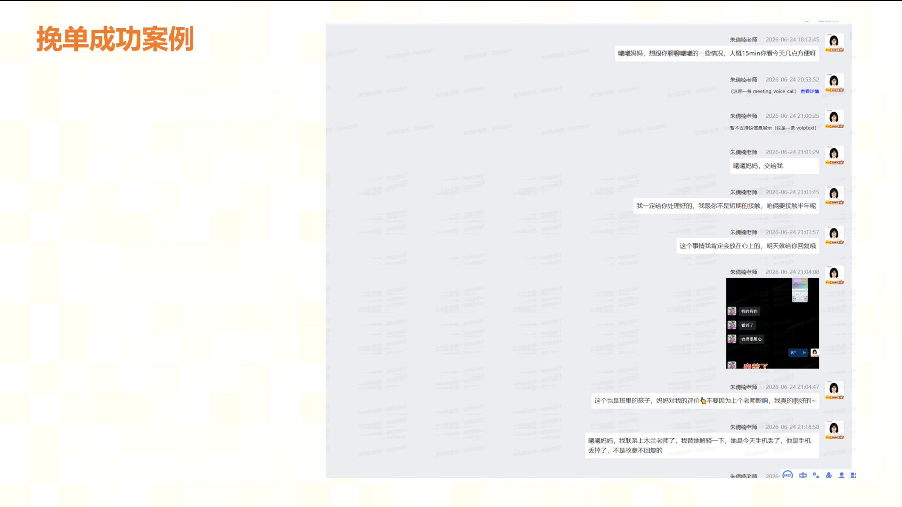
刚刚我们把各类异议的应对思路、流失预警的前置动作都拆解完了。接下来，给大家展示咱们带班老师真实的挽单成功案例。我们前面学习的所有沟通逻辑、异议应对步骤，不是纸上空谈的话术模板，是一线老师实实在在在用、并且拿到结果的方法。当家长提出顾虑、产生退费想法的时候，只要我们稳住节奏、先共情、找准家长的核心顾虑，再给到对应的方案和安全感，是有很大机会挽单成功的。这个案例也能印证：咱们整套处理思路是可行、有效的。后面我们也可以一起拆解这个案例里老师做对了哪些关键动作。
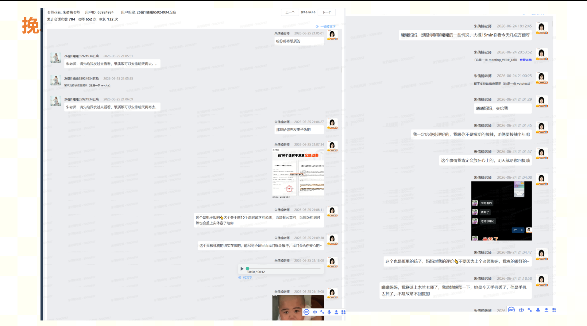
我们一起来看这个真实的挽单案例。这位家长一开始，因为上一任老师没能及时回复消息，心里产生了不信任，不仅怀疑现任老师，对核桃的课程也有顾虑，已经萌生了退费的想法。但最后，家长不仅留了下来，还给孩子报名了赛事。我们拆解一下这位老师做对的四件事。第一，先接住情绪，主动承担，建立信任。家长带着之前不好的体验来，心里有芥蒂。老师没有辩解，也没有甩锅给前任老师，而是主动联系前任老师，帮忙解释了客观情况，安抚家长的负面感受；同时向家长表态，这件事一定放在心上、认真跟进，给家长稳定、靠谱的安全感。先把对立情绪化解掉，这是挽单的第一步。第二，主动兑现承诺，用试学期权益打消决策顾虑。家长想要试学退费相关的纸质说明，老师第一时间先发了电子版，清楚展示前10个课时不满意全额退费的规则，并告知纸质版后续会盖章补齐。把兜底权益明明白白给到家长，让家长看得见保障，解开怕损失这个最大的心结。第三，用长期陪伴的姿态沟通，拉近距离。老师跟家长强调，咱们不是短期接触，接下来要相处半年，传递长期陪伴、持续负责的态度，不是只做一次性成交。同时展示其他家长对自己的好评，侧面证明自己的责任心，扭转家长先入为主的负面印象。第四，持续跟进，从留存延伸到赛事。信任重建之后，老师持续做好学情跟进，家长认可了课程和老师，进一步愿意让孩子参加赛事，从想退费变成主动参与进阶成长。总结这个案例的经验：家长要退费，很多时候不是课程不好，而是信任受损。遇到带着负面情绪来的家长，先处理情绪，再处理事情；不推诿，给明确保障，给出稳定持续的责任心。信任重建了，不仅能留住孩子，还能推动孩子往赛事、高阶学习的方向走。
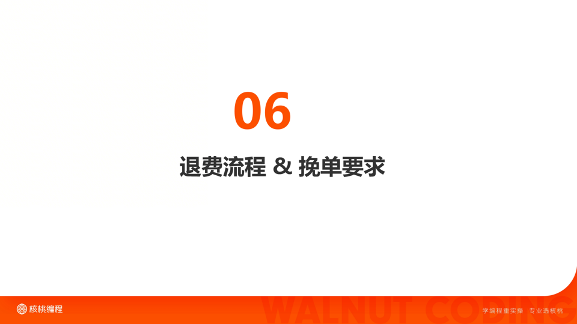
前面我们把异议应对、流失预警、真实挽单案例都看完了。最后这一部分，我们来讲退费流程和挽单的硬性要求。哪怕我们前期服务做得再到位、沟通再及时，退费依然是很难完全避免的情况。一旦家长提出退费，我们要按照规范、合规的流程去处理，既妥善对待家长，同时也保护好我们自己，规避风险，这里的细则大家一定要认真记好。我们接下来会明确两件核心事情： 第一，标准的退费操作流程，每一步我们该做什么、信息怎么留存、提交节点是什么；第二，咱们的挽单要求，什么时候优先挽单、挽单沟通的边界在哪里、合规底线是什么。
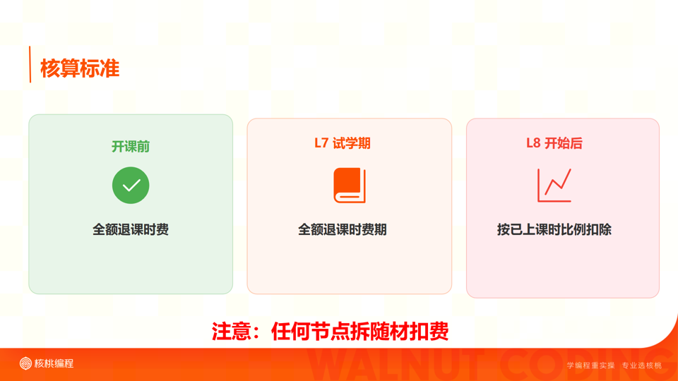
先看核算标准，分三个阶段。前提是不拆随材，注意，任何节点拆了随材都会扣费。第一，开课前申请退费，全额退课时费。第二，L7试学期，也就是全额退课时费期，在这个期间退费，退全额课时费，随材拆了同样要扣费。第三，L8开始后，按已上课时比例扣除后退费，这时候就不是全额了。
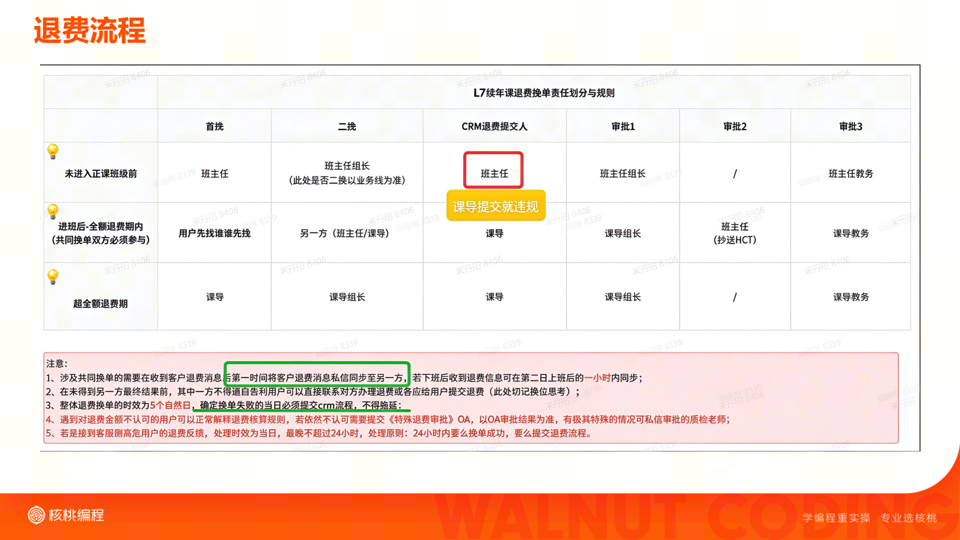
这张表是L7续年课退费挽单的责任划分，分三种场景。第一种，未进入正课班级前。首挽是上一任课导，二挽是上一任课导组长，二挽是否更换以业务线通知为准。CRM退费提交人是上一任课导，审批依次是上一任课导组长、课导教务。重点红线：这个场景下带班课导不能提交退费，提交就属于违规，一定要记牢。第二种，进班后、全额退费期内，上一任课导和带班课导共同挽单，双方必须都参与。规则是家长最先找到谁，谁就先挽，另一方配合参与挽单。CRM退费提交人是带班课导，审批链路是带班课导组长，再到上一任课导并抄送HCT，最后是课导教务。第三种，超全额退费期。首挽是带班课导，二挽是带班课导组长，CRM退费提交人是带班课导，审批是带班课导组长、课导教务。下面五条注意事项，全部是工作底线。第一，共同挽单的场景，收到家长退费诉求，第一时间私信同步给另一方；如果是下班之后收到，第二天上班一小时之内必须同步。不能自己单独处理，另一方不知情，很容易信息错位、沟通冲突。第二，在拿到另一方最终挽单结果之前，任何一方都不能私自答应家长退费，更不能直接提交退费，一定要换位思考、统一口径。第三，退费挽单整体时效是5个自然日，一旦确定挽单失败，当天就要提交CRM流程，不能拖延。第四，家长不认可退费核算规则，先做好解释；仍然不接受，就走《特殊退费审批》OA，最终以OA审批结果为准，极端特殊的情况可以私信审批的质检老师沟通。第五，客服侧流转过来的高意向退费用户，处理时效是当日，最晚不超过24小时，24小时内要么挽单成功，要么提交退费流程。
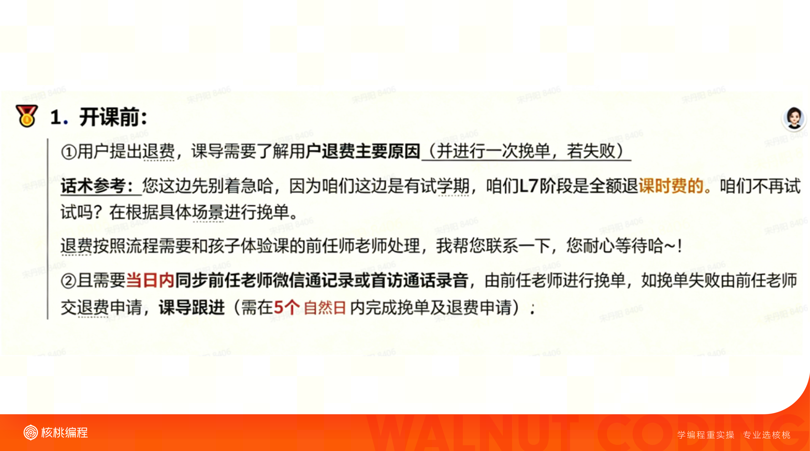
再看具体的挽单规则，第一种，L7开课前。家长在开课前申请退费，带班课导先了解退费的主要原因，并做一次挽单。话术可以参考：您这边先别着急哈，咱们是有试学期的，L7阶段是全额退课时费的，咱们要不再试试？然后根据具体场景挽单。如果挽单失败，可以跟家长说：退费按流程需要和孩子上一阶段的老师处理，我帮您联系一下，您耐心等待哈。接着，当日内把和家长的微信沟通记录或首访通话录音，同步给上一任课导，由上一任课导接手二次挽单。挽单失败，由上一任课导提交退费申请，带班课导配合跟进，全部工作要在5个自然日内完成挽单及退费申请。
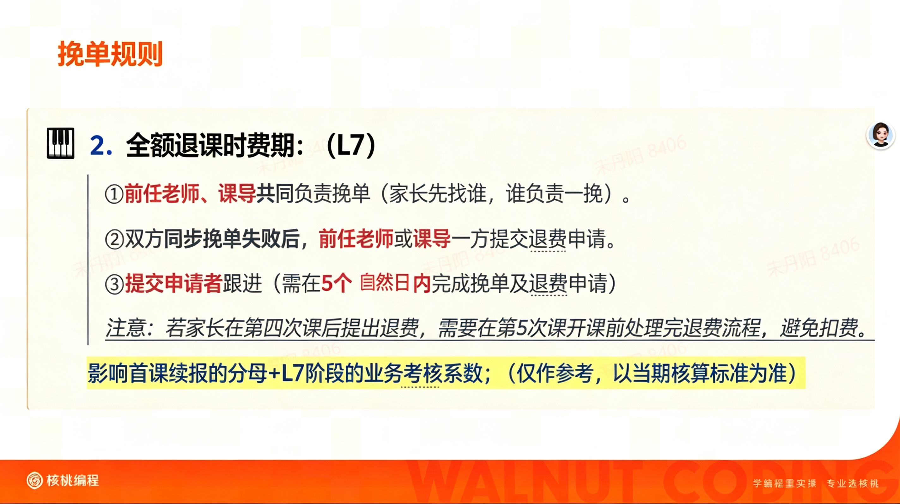
第二种，全额退课时费期，也就是L7阶段，这一页是思维算法的规则。第一，上一任课导和带班课导共同负责挽单，家长先找谁，谁负责第一挽。第二，双方同步挽单失败后，由上一任课导或带班课导其中一方提交退费申请。第三，提交申请的一方负责跟进，需要在5个自然日内完成挽单及退费申请。注意，如果家长在第四次课后提出退费，需要在第五次课开课前处理完退费流程，避免扣费。另外，这个阶段的退费会影响首课续报的分母和L7阶段的业务考核系数，这一点仅作参考，以当期核算标准为准。
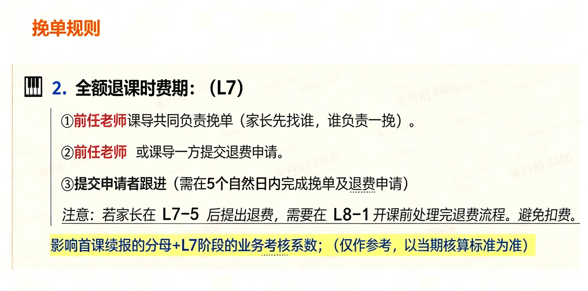
这一页是科特算法在全额退课时费期，也就是L7阶段的规则。第一，上一任课导和带班课导共同负责挽单，家长先找谁，谁负责第一挽。第二，双方同步挽单失败后，由上一任课导或带班课导其中一方提交退费申请。第三，提交申请的一方负责跟进，需要在5个自然日内完成挽单及退费申请。注意，如果家长在L7第5次课之后提出退费，需要在L8第1次课开课前处理完退费流程，避免扣费。另外，这个阶段的退费会影响首课续报的分母和L7阶段的业务考核系数，这一点仅作参考，以当期核算标准为准。
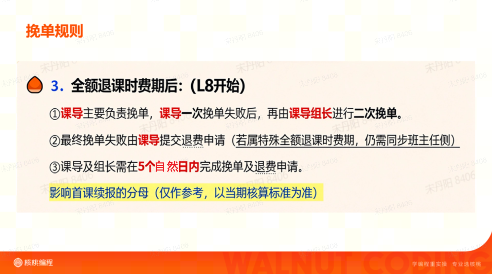
第三种，全额退课时费期之后，也就是L8开始。第一，带班课导主要负责挽单，带班课导一次挽单失败后，再由带班课导组长进行二次挽单。第二，最终挽单失败，由带班课导提交退费申请；如果属于特殊全额退课时费期，仍然需要同步上一任课导一侧。第三，带班课导和组长需要在5个自然日内完成挽单及退费申请。这个阶段的退费会影响首课续报的分母，同样仅作参考，以当期核算标准为准。来看一道题，L8开始（全额退课时费期后），主要负责挽单的是谁？
互动题
L8开始（全额退课时费期后），主要负责挽单的是谁？
- A. 课导
- B. 班主任
- C. 班主任组长
- D. 课导教务
选错后：重讲本页重触发
退费情况在所难免，请大家放平心态，从容应对。前面学的预警信号、归因方法、退费四步法和流程规则，就是大家面对家长异议时的底气。尤其是考级、赛事这类问题，先接住情绪，再拿孩子的轨迹和成长说话。
恭喜大家完成本次学习！请用飞书扫一扫屏幕上的二维码，填写异议处理培训调研问卷，说说你的真实感受吧！
题库（阶段小测 + 综合测试）
T-S01 · 阶段练习题·单选 · 异议沟通·阶段1 · 答案 B
异议处理的核心目标是什么？
- A. 说服家长不要投诉
- B. 提前发现规避掉异议，降低流失率
- C. 家长提出异议后再去解释
T-S02 · 阶段练习题·单选 · 异议沟通·阶段1 · 答案 D
“退费风险最集中窗口期”下标注的“核心理念”是？
- A. 体现产品信心
- B. 降低决策门槛
- C. 给家长灵活选择空间
- D. 退费管控
T-S03 · 阶段练习题·单选 · 异议沟通·阶段1 · 答案 C
出现课后高风险信号（如作业不提交）时，要求的动作是？
- A. 发朋友圈维系
- B. 聊孩子未来规划
- C. 需立即电话触达建立沟通
- D. 提前预告拆硬件内容
T-S04 · 阶段练习题·单选 · 异议沟通·阶段1 · 答案 D
扒轨迹阶段的风险信号“危险程度依次上升”，以下哪项危险程度最高？
- A. 孩子兴趣不足
- B. 被前端"硬盘"进班试学
- C. 上学期落课≥4次
- D. 追单期报名
T-S05 · 阶段练习题·单选 · 异议沟通·阶段1 · 答案 A
课前直播环节，以下哪项属于风险信号？
- A. 评论区不互动
- B. 约不上见面会（孩子忙）
- C. 上课时间不合适
- D. 拒绝拆随材
T-S06 · 阶段练习题·单选 · 异议沟通·阶段2 · 答案 B
看完轨迹发现家长有疑虑，以下哪项属于“先做家长侧重要性沟通”中的动作？
- A. 硬件课吸引力外化
- B. 建立信任
- C. 提升参与感和期待感
- D. 课堂认可、点名表扬
T-S07 · 阶段练习题·单选 · 异议沟通·阶段2 · 答案 D
以下哪项是针对“孩子内向、不互动”给出的做法？
- A. 电话沟通了解需求
- B. 发朋友圈维系
- C. 建立信任
- D. 提前预告拆硬件内容
T-S08 · 阶段练习题·单选 · 异议沟通·阶段2 · 答案 C
看完轨迹、家长无异议时，以下哪项是列出的重点动作？
- A. 建立信任
- B. 电话沟通、聊规划
- C. 硬件课吸引力外化
- D. 再处理孩子侧问题
T-S09 · 阶段练习题·单选 · 异议沟通·阶段2 · 答案 A
看完轨迹、家长有疑虑时，处理顺序是？
- A. 电话沟通、聊规划→建立信任→再处理孩子侧问题
- B. 先处理孩子侧问题→电话沟通、聊规划→建立信任
- C. 建立信任→处理孩子侧问题→电话沟通、聊规划
- D. 先做孩子侧激励→再做家长侧沟通
T-S10 · 阶段练习题·单选 · 异议沟通·阶段2 · 答案 B
家长有疑虑、孩子又内向不互动。做完家长侧沟通、建立信任后，再处理孩子侧问题时可用哪项做法？
- A. 发朋友圈维系
- B. 金币激励
- C. 聊孩子未来规划
- D. 电话沟通了解需求
T-S11 · 阶段练习题·单选 · 异议沟通·阶段3 · 答案 A
家长明确提出退费，退费应对四步法的第一步是？
- A. 强调"孩子成长"
- B. 与孩子沟通
- C. 落回试学期框架
- D. 包装课程
T-S12 · 阶段练习题·单选 · 异议沟通·阶段3 · 答案 B
四步法中，“确认问题根源在家长还是孩子，精准定位”属于哪一步？
- A. 第1步 强调"孩子成长"
- B. 第2步 与孩子沟通
- C. 第3步 落回试学期框架
- D. 第4步 包装课程
T-S13 · 阶段练习题·单选 · 异议沟通·阶段3 · 答案 D
家长提出“不认可课程”，给出的回复思路是？
- A. 突出独特优势、不贬低竞品
- B. 提供小灶辅导、拆解难点建立信心
- C. 邀请双方共同沟通、用试学期降低压力
- D. 展示具体学习成果、用作品和进步说话
T-S14 · 阶段练习题·单选 · 异议沟通·阶段3 · 答案 C
针对“时间太长”异议，“核心价值传递”中提到编程学习每周占用的平均时长是？
- A. 不超过30分钟
- B. 不超过90分钟
- C. 不超过60分钟
- D. 不超过120分钟
T-S15 · 阶段练习题·单选 · 异议沟通·阶段3 · 答案 A
执行总结中，全流程控流失的“主线”是？
- A. 全程围绕提升孩子上课兴趣做事
- B. 全程利他主义，站在家长、孩子角度沟通
- C. 看是孩子侧原因还是家长侧原因
- D. 课前预防＞课中维稳＞课后跟进＞退费挽单
T-S16 · 阶段练习题·单选 · 异议沟通·阶段4 · 答案 A
追单期下单的家长风险高，主要原因是？
- A. 多为冲动报名，容易对二阶课程预期产生落差
- B. 这类家长续费意愿最稳定
- C. 家长已经充分了解二阶课程
T-S17 · 阶段练习题·单选 · 异议沟通·阶段4 · 答案 C
跟进消息不回的家长，沟通收尾适合怎么做？
- A. 反复发送催续费消息
- B. 发一大段课程介绍做陈述句收尾
- C. 抛出开放式疑问，引导家长说出顾虑
T-S18 · 阶段练习题·单选 · 异议沟通·阶段4 · 答案 B
面对带有负面情绪、不信任的退费意向家长，挽单第一步是？
- A. 立刻解释课程优势
- B. 先接住情绪，主动承担、建立信任
- C. 直接告知退费规则催促决定
T-S19 · 阶段练习题·单选 · 异议沟通·阶段4 · 答案 C
挽单案例里，老师用什么打消家长的顾虑、降低踩坑担心？
- A. 只口头承诺效果
- B. 承诺孩子一定拿赛事奖项
- C. 清晰告知试学期退费保障规则
T-S20 · 阶段练习题·单选 · 异议沟通·阶段4 · 答案 B
家长对上一位老师不回复有意见，老师是怎么处理的？
- A. 直接告知家长退费规则
- B. 联系上木兰老师，向家长解释她是手机丢了、不是故意不回复
- C. 让家长自行联系班主任办理退费
- D. 给家长发送完课时长排名
T-S21 · 阶段练习题·单选 · 异议沟通·阶段5 · 答案 D
以下关于退费核算标准的对应关系，正确的是？
- A. L8开始后——全额退课时费
- B. L7试学期——按已上课时比例扣除
- C. 开课前——按已上课时比例扣除
- D. L8开始后——按已上课时比例扣除
T-S22 · 阶段练习题·单选 · 异议沟通·阶段5 · 答案 C
接到客服高危用户的退费反馈，处理时效是？
- A. 5个自然日内
- B. 第二日上班后一小时内
- C. 当日处理，最晚不超过24小时
- D. 5个工作日内
T-S23 · 阶段练习题·单选 · 异议沟通·阶段5 · 答案 A
涉及共同挽单时，收到客户退费消息后应如何处理？
- A. 第一时间将客户退费消息私信同步至另一方
- B. 等挽单失败后再同步另一方
- C. 直接提交《特殊退费审批》OA
- D. 先自行挽单，5个自然日后再同步另一方
T-S24 · 阶段练习题·单选 · 异议沟通·阶段5 · 答案 B
开课前用户提出退费，课导一次挽单失败后，应如何同步？
- A. 当日内同步给课导组长
- B. 当日内同步班主任微信沟通记录或首访通话录音
- C. 5个自然日内同步给班主任
- D. 5个自然日内同步给课导组长
T-S25 · 阶段练习题·单选 · 异议沟通·阶段5 · 答案 C
L8开始，课导一次挽单失败后，由谁进行二次挽单？
- A. 班主任
- B. 班主任组长
- C. 课导组长
- D. 课导教务
T-F01 · 本章综合测试题·单选 · 异议沟通·全章 · 答案 B
“退费风险最集中窗口期”指的是哪个时期？
- A. 开课前
- B. 试学期
- C. L8开始后
- D. 接班期
T-F02 · 本章综合测试题·单选 · 异议沟通·全章 · 答案 A
学员在L7试学期内提出退费，且已拆随材，按P25核算标准应如何处理？
- A. 课时费全额退，随材按“任何节点拆随材扣费”处理
- B. 课时费按已上课时比例扣除，随材不扣费
- C. 课时费全额退，随材不扣费
- D. 课时费按已上课时比例扣除，随材也扣费
T-F03 · 本章综合测试题·单选 · 异议沟通·全章 · 答案 D
接班后的第一件事应该是什么？
- A. 急着给家长发消息打招呼
- B. 准备见面会课件
- C. 直接打电话沟通
- D. 扒轨迹，从后台数据识别风险
T-F04 · 本章综合测试题·单选 · 异议沟通·全章 · 答案 C
退费挽单步骤的正确顺序是？
- A. 与孩子沟通→强调"孩子成长"→包装课程→落回试学期框架
- B. 落回试学期框架→强调"孩子成长"→与孩子沟通→包装课程
- C. 强调"孩子成长"→与孩子沟通→落回试学期框架→包装课程
- D. 包装课程→落回试学期框架→与孩子沟通→强调"孩子成长"
T-F05 · 本章综合测试题·单选 · 异议沟通·全章 · 答案 A
带班精力有限，按全流程控流失的优先级，日常应该把最多的功夫花在？
- A. 课前预防：提前识别风险信号、前置干预
- B. 只在课后跟进
- C. 全靠话术救火
- D. 等家长提退费再做挽单
T-F06 · 本章综合测试题·单选 · 异议沟通·全章 · 答案 B
关于退费挽单时效，以下说法与P26一致的是？
- A. 整体时效为5个工作日，确定挽单失败后3日内提交crm流程
- B. 整体时效为5个自然日，确定挽单失败的当日提交crm流程
- C. 整体时效为7个自然日，确定挽单失败的当日提交crm流程
- D. 整体时效为5个自然日，确定挽单失败后次日提交crm流程
T-F07 · 本章综合测试题·多选 · 异议沟通·全章 · 答案 AB
（多选）以下预警信号与环节的对应，正确的有？
- A. 课前预警：缺席见面会、首通沟通异常、频繁缺课
- B. 课中预警：课堂消极、频繁退课、跟不上进度
- C. 课后预警：缺席见面会、频繁缺课
- D. 课中预警：不交作业、家长长期失联
T-F08 · 本章综合测试题·多选 · 异议沟通·全章 · 答案 ABC
（多选）全流程控流失中，以下对应关系正确的有？
- A. 课前直播：激发兴趣，提前打消厌学想法
- B. 课中：实时维稳，避免上课中途放弃
- C. 课后：闭环跟进
- D. 课后：实时盯防进度落后、走神切屏
T-F09 · 本章综合测试题·多选 · 异议沟通·全章 · 答案 ABC
（多选）以下风险信号与所属阶段的对应，正确的有？
- A. 首通阶段：追问退费细则
- B. 课前直播：评论区不互动
- C. 课后高风险信号：作业不提交
- D. 课中异常：约不上家长会
T-F10 · 本章综合测试题·多选 · 异议沟通·全章 · 答案 ABC
（多选）以下哪些属于“硬件”类风险信号？
- A. 拒绝拆随材
- B. 询问随材退费规则
- C. 孩子不喜欢硬件
- D. 拒绝参加直播
T-F11 · 本章综合测试题·多选 · 异议沟通·全章 · 答案 ABC
（多选）针对“家长不配合、不回复”，给出的家长侧做法有？
- A. 电话沟通了解需求
- B. 聊孩子未来规划
- C. 发朋友圈维系
- D. 金币激励
T-F12 · 本章综合测试题·多选 · 异议沟通·全章 · 答案 ABCD
针对孩子内向、不互动，可以采取哪些激励措施？
- A. 小灶带孩子实操拆硬件
- B. 点名表扬、发小奖状
- C. 提前预告拆硬件内容
- D. 金币激励
T-F13 · 本章综合测试题·多选 · 异议沟通·全章 · 答案 AB
（多选）关于退费应对的核心原则，以下说法正确的有？
- A. 第一时间报备给组长
- B. 不急于答应退费，先了解真实原因
- C. 先答应退费，再了解真实原因
- D. 挽单失败后再报备给组长
T-F14 · 本章综合测试题·单选 · 异议沟通·全章 · 答案 C
家长拿其他机构竞品对比时，正确做法是？
- A. 贬低竞品来抬高自己
- B. 承认别家更好
- C. 突出我们模顿实操+直播授课的特色，客观对比、坚决不贬低竞品
- D. 回避不谈
T-F15 · 本章综合测试题·单选 · 异议沟通·全章 · 答案 D
家长说「比赛成绩不好，感觉白学了」，正确的沟通思路是？
- A. 建议孩子放弃比赛
- B. 责怪孩子不用功
- C. 承诺下次一定拿奖
- D. 先共情，帮家长重新定义成绩——备赛过程的锻炼才是真正收获，同步本学期赛事规划和辅导承诺